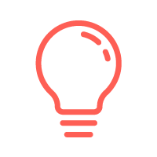
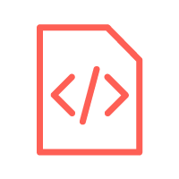

SKILLS

Think
With a diverse background in advertising, photography, and video I bring a wide range of creative perspective to every design challenge.

Design
I am fluent in the Adobe Creative Suite and develop UI Wireframes/Prototypes using Sketch and InVision. I live on Mac, but am PC friendly.

Code
I code responsive web experiences using HTML5, CSS3, and JavaScript. I also develop in the React framework, and use Github for version control.